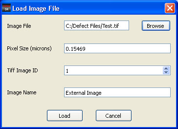

A standalone
TIFF file image can be loaded into Calibre DefectReview and viewed
as an auxiliary image in the Image Management window.
Procedure
- In the Calibre DefectReview
window, select Utilities > Load
Image File. The Load Image File dialog box appears.
Figure 1. Load Image File Dialog Box
- Click Browse and select the TIFF
file name. The selected file name is displayed in the Image File
text box.
- Specify the pixel size associated
with TIFF image in the Pixel Size (microns) text box. By default,
the pixel size of the defect image is displayed. You can modify
the pixel size as required.
- If you specify a file with
multiple TIFF images, you can select a particular image in the file.
By default, the first image in the multi-TIFF file is selected and
displayed in the Tiff Image ID combo box.
- Click Load. The specified TIFF file
is loaded into Calibre DefectReview.
- Right-click in the display
unit area of the Image Measurement window, then select Other Images > <loaded_image_name>.
The tool bar icon Display Auxiliary Images in Image Measurement
Unit is enabled.
Figure 2. Display Auxiliary
Images Icon
- Click the icon. The loaded
TIFF file image is displayed in the Image Measurement window.
The
loaded TIFF images are associated with the current defect displayed
in the Image Measurement window. If you save the inspection file,
then the TIFF image is also saved.